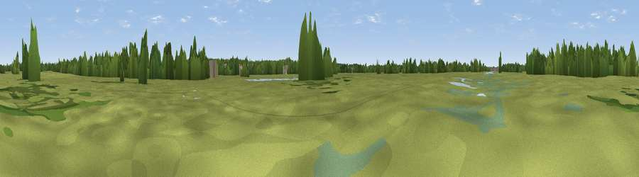

Viewpoint near Kingston upon Thames
#45634 in England · top 83% of its area beats it · near Kingston upon ThamesThe view, rendered

A 360° render of this exact spot computed from the terrain model, tree cover and land cover — summer colours, afternoon light, calibrated against photographs of famous viewpoints. Real trees, hedges and buildings will differ in detail.
The panorama
Grey silhouette: terrain skyline in each direction (720 bearings, Earth curvature and refraction included). Dashed green: skyline with trees (+15 m) and buildings (+8 m) as obstacles. Blue strip: how far the ground is visible on each bearing.
Where the view opens
Wedge length = distance to the farthest visible ground on that bearing (vegetation-aware). Rings at 10, 25 and 50 km.
What fills the view
57% grassland · 24% woodland · 17% built-up · 2% water
Angular shares of the visible panorama (visual magnitude), not map area. Landscape diversity 0.45 (0–1 Shannon).
Key numbers
More beautiful places nearby
The staircase of upgrades: each row has a higher view potential than everything closer. Driving times are estimates from straight-line distance, calibrated against real road routing — check an actual route before setting out.
| Place | Direction | Drive | Score |
|---|---|---|---|
| Viewpoint near Thames Ditton | SSE · 2 km | ~5 min | 38.8 |
| Viewpoint near Esher | SW · 5 km | ~10 min | 45.4 |
| Viewpoint near Oxshott | S · 8 km | ~16 min | 50.5 |
| St Ann's Hill | W · 14 km | ~26 min | 51.8 |
| Box Hill | S · 17 km | ~30 min | 70.4 |
| Viewpoint near Box Hill Village | S · 17 km | ~30 min | 71.0 |
| Viewpoint near Coldharbour | S · 25 km | ~41 min | 71.3 |
| Viewpoint near Fernhurst | SW · 46 km | ~67 min | 75.1 |
51.40122, -0.31856 · source: osm viewpoint · position refined by local search. Computed location — check access rights before visiting.